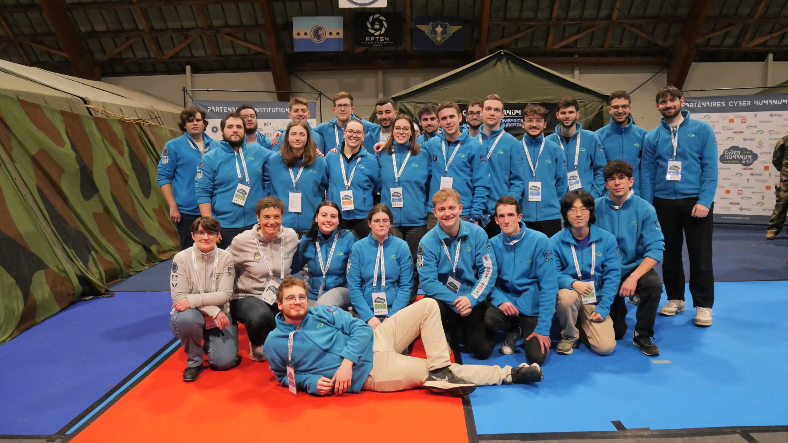
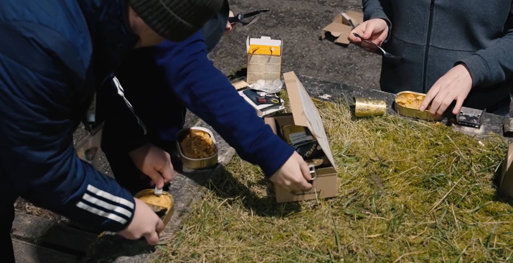
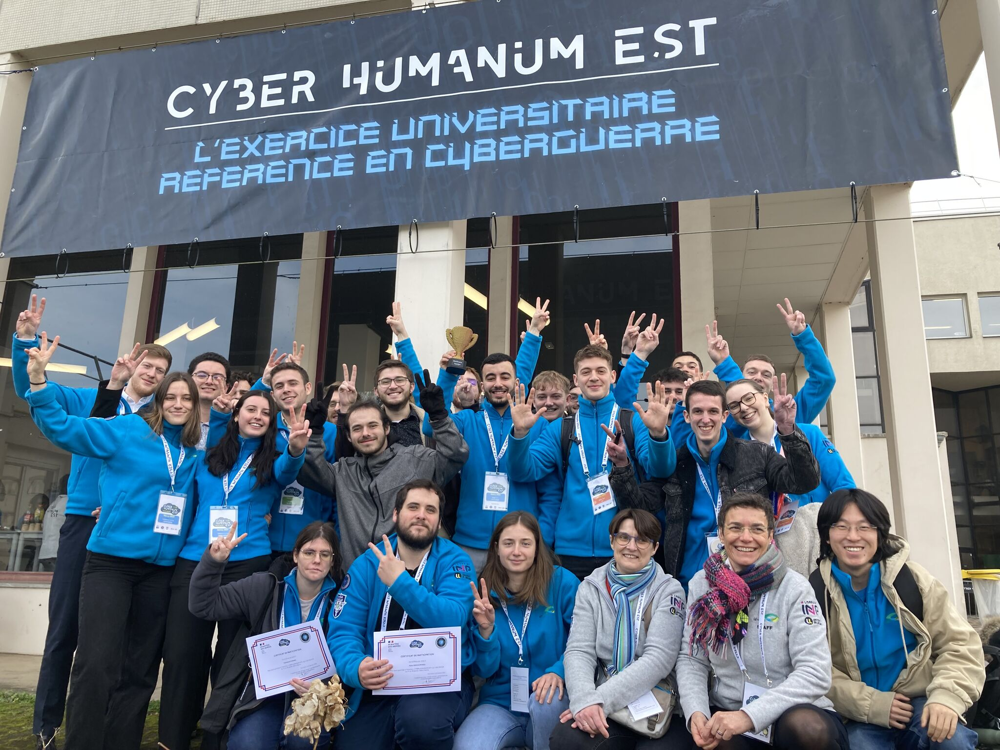

🚀 Ce que nous avons retiré du Cyber Humanum Est 2025
Cette aventure a été bien plus qu'un simple exercice. Elle nous a permis d'acquérir des compétences précieuses, de nous confronter à des conditions réelles et de vivre une expérience humaine et professionnelle unique.

💡 Acquisition de compétences clés
Cyber Humanum Est nous a offert une immersion dans un environnement cyber complexe. Nous avons appris à analyser des cyberattaques, à mettre en place des défenses adaptées et à gérer des incidents en temps réel.
🎯 Une immersion en conditions réelles
Le CHE ne se limitait pas à un exercice théorique. Nous avons dû travailler sous pression dans des conditions extrêmes :
- Collaboration avec une grande équipe aux compétences variées.
- Gestion de la fatigue et du stress avec des nuits très courtes.
- Découverte des rations militaires, donnant un aperçu du terrain.

🏆 Une précieuse expérience humaine et professionnelle
Au-delà des compétences techniques, cet événement nous a appris à travailler en équipe, à nous adapter aux imprévus et à prendre des décisions sous pression. Il a aussi été l'occasion de rencontrer des experts et des passionnés du domaine.

🌍 Un tremplin pour l'avenir
Le CHE nous a permis d’en apprendre davantage sur les enjeux de la cybersécurité et les nombreuses opportunités du secteur. Les échanges avec les partenaires et les professionnels présents ouvrent de nouvelles perspectives pour notre avenir.
